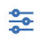

Filtering report data
Use filters to drill down into or broaden the information in the report.
There are many reasons why you might not want to view all available information in a report. For example, you might want to view data in a specific date range or for a specific team. You can focus on specific data in a report by using filters.
Selected filters apply to the current data in the report. When the filter is changed or removed the report data reflects the change.
- From the Reports page, click  at the top of the report or chart within a custom report.
- Available filters for the report or chart are displayed across the top of the Filters page. Click a filter to see the filter details and make changes.
- Click Apply to save your changes.
Parent topic: How to